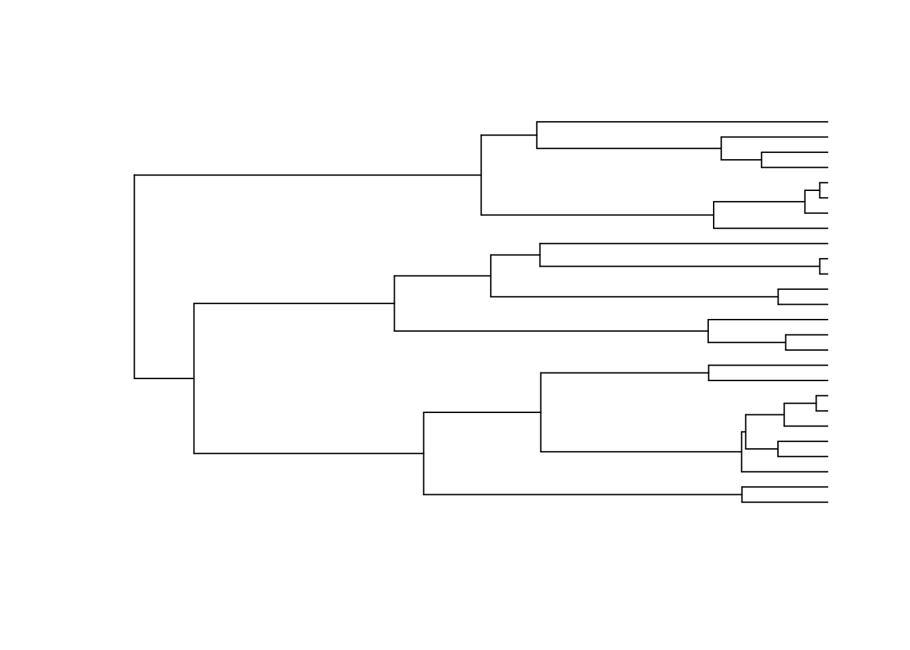
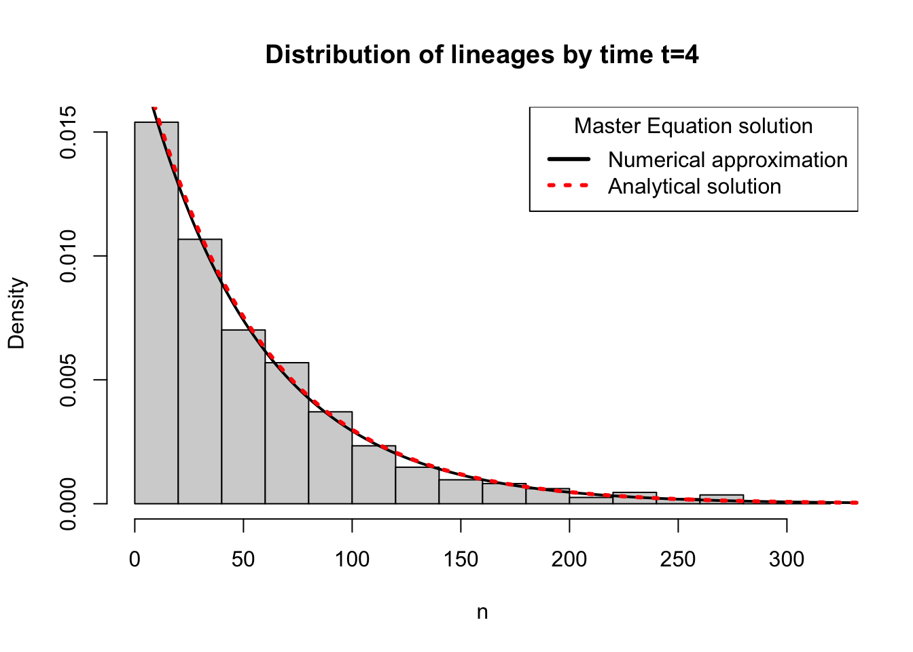
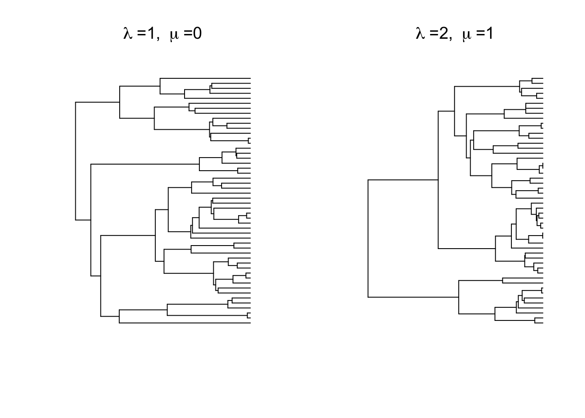
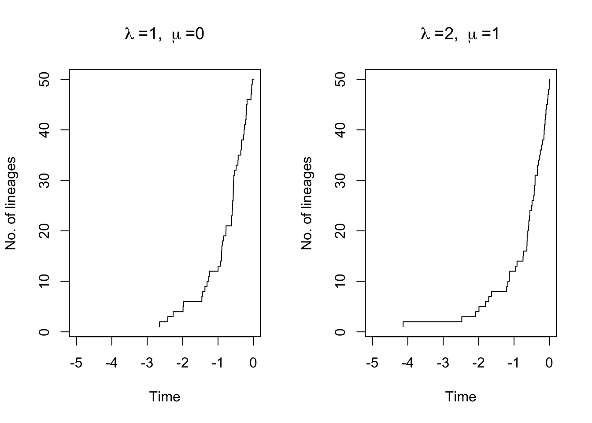
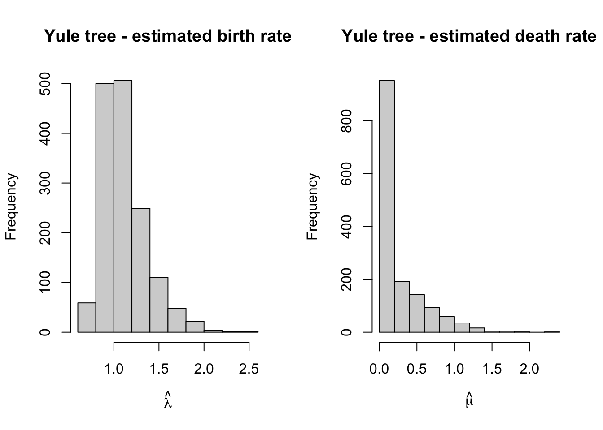
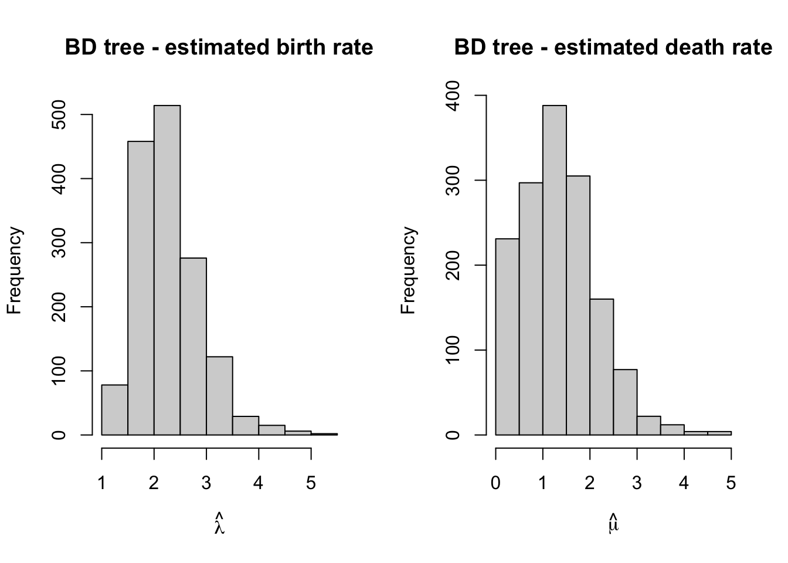

library(diversitree)Estimating parameters in birth-death models
First: simulating birth-death trees
So far, we have been treating phylogenetic trees as given without asking how they are created (by some biologist, presumably). If the traits we are interested in do not influence diversification, extinction/death, or the probability we observe a particular lineage, then the standard Markov models on trees seem sufficient. In some cases, traits might influence the process creating the phylogenetic relationships we observe, and we would like to detect these effects.
It is for this reason that we start by considering models for tree generation (sometimes called “tree priors” by people who use BEAST, which we will get to later in the week).
Let’s start by simulating some trees using Yule and birth-death models. We will use the diversitree package:
Yule process
The Yule model is a special case of birth death models. The Yule model is characterized by having the death rate set to \(\mu=0\). Let’s simulate a tree from the Yule process with \(\lambda = 1\) for four units of time:
tree <- tree.bd(c(lambda=1, mu=0), max.t = 4)
plot(tree, show.tip.label=F)
Recall that the probability of \(n\) lineages by time \(t\), assuming we start with one lineage at time \(0\), is given by the solution to the differential equation
\[ \begin{align*} \frac{dp_n}{dt} &= \lambda (n-1) p_{n-1} - \lambda n p_n, \quad \text{for } n > 1, \\ \frac{dp_1}{dt} &= - \lambda p_1. \end{align*} \]
This is the Forward Equation (do you remember what the Backward Equation is?).
As a sanity check, let’s simulate a large number of Yule trees up to time \(t=4\) to see whether the number of lineages we observe matches the prediction from the Forward Equation. We can easily obtain an approximate solution to the Forward Equation because it is a linear albeit infinite dimensional system of ODEs. This is a little easier to see if we rewrite it as an (infinite-dimensional) matrix equation:
\[ \begin{align*} \frac{d}{dt} \begin{pmatrix} p_1 \\ p_2 \\ . \\ . \\ . \\ p_n \\ p_{n+1} \\ . \end{pmatrix} = \begin{pmatrix} - \lambda & 0 & 0 & 0 & . & . & . & 0 & 0 & . & .\\ \lambda & -2 \lambda & 0 & 0 & . & . & . & 0 & 0 & . & .\\ 0 & 2 \lambda & -3 \lambda & 0 & . & . & . & 0 & 0 & . & .\\ 0 & . & . & . & . & . & . & . & . & . & .\\ 0 & . & . & . & . & . & . & . & . & . & .\\ 0 & . & . & . & . & . & . & (n-1) \lambda & -n \lambda & . & .\\ 0 & . & . & . & . & . & . & . & n \lambda & -(n+1) \lambda & .\\ 0 & . & . & . & . & . & . & . & . & . & .\\ \end{pmatrix} \begin{pmatrix} p_1 \\ p_2 \\ . \\ . \\ . \\ p_n \\ p_{n+1} \\ . \end{pmatrix} \end{align*} \]
If we truncate this system \(dP/dt = Q P\) at large but finite \(N\), then we can approximate the solution as \(P_N(t) \approx e^{Q_Nt} P_{N}(0)\). The approximation should be reasonable if we choose \(N\) sufficiently large. If we simulate only up to time \(t=4\), \(N\) probably doesn’t need to be to huge. If we simulate for longer amounts of time, then we will need make \(N\) larger.
For comparison, we can also use the analytical solution \(P_n(t) = e^{-\lambda t} (1-e^{-\lambda t})^{n-1}\).
# How long to simulate?
t <- 4
# Max number of lineages in the approximate solution?
N <- 1000
# Birth rate:
lambda <- 1
# Set up the generator:
Q <- diag(N)
diag(Q) <- - (1:N) * lambda
diag(Q[-1,-N]) <- (1:(N-1))*lambda
# Initial condition: 1 lineage alive at time 0
p0 <- rep(0,N)
p0[1] <- 1
# load in routines to carry out matrix exponentiation for sparse matrices:
require(expm)Loading required package: expmLoading required package: Matrix
Attaching package: 'expm'The following object is masked from 'package:Matrix':
expmThe following object is masked from 'package:ape':
balance# Perform the matrix exponentiation:
pn <- expAtv(Q, p0, t)$eAtvProbability should be conserved. Our truncation does not respect this (the lastlast column sum of \(Q_N\) is negative, meaning there is a net flux of probability out of the truncated system). We can use this to check if our truncation is reasonable – if we chose \(N\) sufficiently large, then the probability flux out of the system should be negligible. That is, the entries of \(P_N\) should sum to something very close to one:
sum(pn)[1] 1If we chose \(N\) too small in the code at the beginning, then we know that we will be losing probability from the system (which is nonsensical). The large value of \(N\) I chose here is ensuring that we are conserving probability, which is good. Experiment with a smaller truncation size \(N\) above and re-examine this if it doesn’t make sense to you.
Now let’s simulate a large number of Yule trees to compare with the approximate solution from the Master Equation:
## Next, we simulate a large number of Yule trees for t units of time:
yulelist <- lapply(1:1000, function(x) tree.bd(c(lambda=1,mu=0), max.t=t))
# Sometimes these fail to make a tree (no births by time t?), so we toss these out:
inds <- sapply(yulelist, is.null)
yulelist <- yulelist[!inds]
n <- sapply(yulelist, Ntip)
# Let's also create a fucntion for our analytical solution for comparison:
getpn <- function(n) exp(-lambda*t)*(1-exp(-lambda*t))^(n-1)
pn.a <- sapply(0:400, getpn)So now we have simulated lots of Yule trees (~ 1000 of them) and we can compare the distribution of lineages with the prediction from the Master equation:
hist(n, freq=F, main='Distribution of lineages by time t=4', breaks=20)
lines(pn, lwd=2)
lines(pn.a, lwd=3, lty=3, col='red')
legend('topright', legend=c('Numerical approximation', 'Analytical solution'),
lwd=3,lty=c(1,3),col=c('black','red'), title='Master Equation solution') 
These appear to be in agreement. The approximation will break down if (i) we simulate over a longer period of time, \(t\), (ii) if we simulate with a larger birth rate \(\lambda\), or (iii) truncate the Master equation at a smaller value of \(N\). You should experiment with changing all three of these quantities.
To summarize: the solution to the Master equation gives us a way to quantify the probability we observe a Yule tree with \(n\) lineages and height \(t\). Yule trees that differ only in topology but otherwise have the same height and number of lineages are equally likely to occur in this model.
This is useful for parameter estimation. But before we do that, let’s look at the birth death model with a positive death rate.
Birth death process
If the death rate is positive (\(\mu > 0\)), the process is fundamentally different. This is because the process can go extinct.
Let’s use the lapply function to generate a list of simulated outputs (lapply is like a for loop). Instead of simulating up to time \(t\), let’s simulate trees up to a fixed number of taxa – 50, in our case.
Let’s see how frequently the process goes extinct before we reach 50 taxa.
numtrees <- 50
treelist <- lapply(1:numtrees,
function(x) tree.bd(c(lambda=2, mu=1), max.taxa = 50)
)
dieoffs <- sapply(treelist, is.null)
numdieoffs <- sum(dieoffs)How many died off before reaching 50 taxa?
print(numdieoffs)[1] 23This is sort of interesting. In the first tree we simulated above, we set \(\lambda=1\) and \(\mu=0\), for a net birth rate equal to 1. In this second example, we set \(\lambda=2\) and \(\mu=1\). The net birth rate still equals 1, but extinction is far more likely now.
Follow up question: if we look at a tree produced by \(\lambda=1\), \(\mu=0\) and another tree (successfully) produced with \(\lambda=2\), \(\mu=1\), are they noticeably different?
tree_yule <- tree.bd(c(lambda=1,mu=0),max.taxa=50)
tree_bd <- treelist[!dieoffs][[1]]
par(mfrow=c(1,2))
plot(tree_yule, main=bquote(lambda~'=1, '~mu~'=0'),
show.tip.label=F)
plot(tree_bd, main=bquote(lambda~'=2, '~mu~'=1'),
show.tip.label=F)
It isn’t super obvious whether these trees have different statistical properties. One clue is to examine the number of lineages through time:
require(ape)
par(mfrow=c(1,2))
ltt.plot(tree_yule, xlab='Time', ylab='No. of lineages',
xlim=c(-5,0),main=bquote(lambda~'=1, '~mu~'=0'))
ltt.plot(tree_bd, xlab='Time', ylab='No. of lineages',
xlim=c(-5,0),main=bquote(lambda~'=2, '~mu~'=1'))
This suggests these trees are different (depending on the random seed used to simulate the trees!). You should try running this several times to see if you notice a pattern.
If you do this, you may notice a tendency for birth-death trees to have shorter heights than their Yule counterparts (conditioning on the same number of taxa, of course). Indeed, conditioning on 50 taxa in the birth death process biases us towards to trees that grow rapidly. The ones that grow more slowly could be at greater risk of extinction. In the Yule process there is no extinction, so we are more likely to observe slowly-growing trees that eventually reach 50 taxa.
Exercises
Simulate a large number of Yule and birth-death trees for a fixed number of taxa and compare the distributions of tree heights to determine whether there is in fact a meaningful difference.
Instead of simulating trees up to a fixed number of taxa, simulate trees up to a fixed time. Do you notice any differences between Yule and birth death trees in terms of the number of taxa produced by time \(t\)?
Estimating parameters using likelihoods
There is another way to determine whether these trees are statistically indistinguishable or not. We can use the likelihood function, which quantifies the probability (density) of observing a particular tree given model parameters. If the trees are statistically indistinguishable, then it should not be possible for us to estimate the parameters of the models. If we can estimate parameters, then that means the trees contain information about whether the underlying process was Yule or birth-death.
We’ve been doing Maximum Likelihood a lot up to now. In case you need extra reading material, here you go.
We’ve seen a couple of examples of likelihood functions already in this tutorial. The solutions to the Master equations for these processes tell us the probability, \(p_n(t)\), of observing \(n\) lineages by time \(t\). Put another way, this gives us the probability of observing a phylogenetic tree of height \(t\) with \(n\) taxa.
The terminology ``likelihood’’ means that we consider \(p_n(t)\) as a function of the model parameters (\(\lambda\) in the Yule process, or \((\lambda, \mu)\) in the birth-death process). Maximum likelihood means that, given our tree of height \(t\) with \(n\) taxa, we maximize \(p_n(t)\) with respect to the parameters of the model. These optimal parmeter values are the Maximum Likelihood Estimate.
We can create likelihood functions for these trees like so:
loglik.yule <- make.bd(tree_yule)
loglik.bd <- make.bd(tree_bd)Let’s try finding the MLE for the Yule tree (supplying the ground truth as the initial guess in the optimization procedure):
mle.yule <- find.mle(loglik.yule, c(1,0), method='subplex')
print(mle.yule$message)[1] "success! tolerance satisfied"print(mle.yule$lnLik)[1] 104.5311print(mle.yule$par) lambda mu
1.180524e+00 4.172325e-08 Looks pretty close.
How about for the birth-death tree (again, supplying the ground truth as the initial guess in the optimization procedure):
mle.bd <- find.mle(loglik.bd, c(2,1), method='subplex')
print(mle.bd$message)[1] "success! tolerance satisfied"print(mle.bd$lnLik)[1] 108.2459print(mle.bd$par) lambda mu
1.815216 1.104459 Seems like it’s kind of in the ballpark.
One downside with this is that we are dealing with fairly small trees, and stochasticity is probably introducing lots of noise. If our goal is to understand the types of information we are likely to recover from realizations of these processes, we need to look at a large number of simulations so that statistical regularity kicks in.
Benchmarking from simulations
Let’s simulate more trees. The make.bd function can be lapply’d to the treelist to give us a list of likelihood functions corresponding to our list of trees.
treelist.yule <- trees(c(lambda=1,mu=0),
type=c("bd"), n=1500,
max.taxa=50)
# make a log-likelihood function for each tree:
logliklist <- lapply(treelist.yule, make.bd )What does the distribution of MLEs look like for this set of Yule trees?
mles <- lapply(logliklist, function(x){find.mle(x, c(1,0), method='subplex')})
mles_pars <- t(sapply(mles, function(x) x$par))
par(mfrow=c(1,2))
hist(mles_pars[,1],main='Yule tree - estimated birth rate',
xlab=bquote(hat(lambda)))
hist(mles_pars[,2],main='Yule tree - estimated death rate',
xlab=bquote(hat(mu)))
The estimates \(\hat{\lambda}\) seem to be close to the true value of \(\lambda=1\), but the extinction rate, which was \(\mu=0\), seems a little harder to pin down.
Remember that the true value of mu we used was mu=0. A lot of the models suggest values of \(\mu\) > 0, which suggests that Yule trees sometimes look birth-death-like.
Let’s try this for birth-death trees next:
treelist.bd <- trees(c(lambda=2,mu=1),
type=c("bd"), n=1500,
max.taxa=50)
# make a log-likelihood function for each tree:
logliklist <- lapply(treelist.bd, make.bd )
mles <- lapply(logliklist, function(x){find.mle(x, c(2,1), method='subplex')})
mles_pars <- t(sapply(mles, function(x) x$par))
par(mfrow=c(1,2))
hist(mles_pars[,1],main='BD tree - estimated birth rate',
xlab=bquote(hat(lambda)))
hist(mles_pars[,2],main='BD tree - estimated death rate',
xlab=bquote(hat(mu)))
The birth-death trees with \(\lambda=2\), \(\mu=1\) clearly have a tendency to convey information about the birth rate \(\lambda\) being elevated above the net birth rate \(\lambda-\mu=1\). Again, however, the death rate is difficult to pin down.
Exercises:
1.
Use constrain(loglik, mu ~ 0) to create constrained log-likelihood functions for the Yule trees, and fit them to obtain new estimates for lambda. How does the variance in \(\hat{\lambda}\) change?
2.
The Generalized Likelihood Ratio Test is one way to assess whether \(\mu\) is significantly different from zero. The model with more parameters will always fit the data better, but it may not fit the data “that much” better. The GLR test looks a log(ratio of likelihoods) = difference(log-Likelihoods) to produce a test statistic (also, rather annoyingly in this case, called \(\lambda\)).
Use
constrain(loglik, mu ~ 0)to create the constrained log-likelihood functions, and fit them to obtain new estimates for lambda.
Then formulate a GLR test to assess significant departues from a null hypothesis of \(\mu=0\).
(Follow up: the GLR test makes an asymptotic approximation. What is that approximation, and under what situations would it apply in this case?)
(Hint: find.mle stores log-likelihood values in lnLik).
3.
Consider a different hypothesis: \(\lambda > \mu\). Look at your estimates \(\hat{\lambda}\) and \(\hat{\mu}\) to see how often would you conclude that \(\lambda < \mu\).
If your simulation produced trees with estimated values of \(\hat{\lambda} < \hat{\mu}\), plot these trees and comment on any features they exhibit that stand out to you. If your simulation did not produce trees with MLEs having \(\hat{\lambda} < \hat{\mu}\), look at a friend’s computer to see if theirs did.
5.
The find.mle function uses a variety of numerical optimization algorithms to find MLEs. There is also a function called that performs Markov Chain Monte Carlo. It accepts a log-likelihood function, and initial parameter guess (x.init), and a number of iterations to run (nsteps). It also requires a ``tuning parameter’’ called w to help the MCMC routine work more efficiently.
Use the mcmc function with nsteps=1000 and w=c(2,1). Plot loglikelihood (“p”) against parameters to visualize profile log-likelihoods, and also plot lambda against mu. Comment on what you see, and discuss implications of correlations between lambda and mu. (Note: there are other mcmc routines besides this one in diversitree. If you have a favorite method, feel free to use it.)
6.
Replace max.taxa with max.t in the tree.bd function to simulate trees for a fixed amount of time (with variable numbers of taxa), and then repeat Exercises 1-5. (Caution: injudicious choices of lambda and max.t can make your computer explode. Ctrl + c is useful (on Mac, anyway) for cancelling calculations in the Terminal.)
Birth-death-sampling models (and the unidentifiability problem)
In the previous section, we saw that it is in principle possible to estimate paramters of the Yule model and the birth-death model. The statistical behavior of the Maximum Likelihood Estimates might leave something to be desired (especially for the extinction rate \(\mu\)), but in the limit as the number of taxa tends to infinity, our estimators should be converging in expectation to the ground truth parameter values.
Models with this property are said to be identifiable. The Yule Process and the birth death model are identifiable (assuming that the rates are fixed constants in time). Seemingly innocuous modifications to these models render them unidentifiable.
The final example we will consider in this tutorial is the birth-death-sampling model. The primary motivation for considering the birth-death-sampling model comes from epidemiology. In that context, pathogens spread between hosts, and infection events correspond to bifurcation events in the pathogen phylogeny. Infected people are also observed over a period of time (perhaps as they show up at the hospital). Consequently, the trees produced are not ultrametric, they are heterochronous. In practice, the vast majority of individuals who are infected are also never sampled, so observed pathogen phylogenies represent a small piece of the true underlying phylogeny.
In this model, three things can happen:
A lineage can split in two (at rate \(\lambda\)); this corresponds to a new transmission event
A lineage can die (at rate \(\mu\)); this corresponds to either (i) an infected host dying, or (ii) an infected host getting better before transmitting disease
A lineage (which resides in an infected host) can be sampled (at rate \(\psi\))
Arguably the most important aspect of this process is that we only observe the lineages that get sampled. The phylogeny describes ancestry of these sampled lineages. This is potentially a very small portion of the entire tree.
You might be able to intuit the problem already. We didn’t emphasize this in the birth-death model earlier, but in that context we are in fact also observing a subset of the entire phylogeny. If we simulate a birth-death model up to time \(t\), we never observe lineages that die out before time \(t\). The Master equation abstracted away the tree produced by the stochastic process, but in fact it can be helpful to consider dynamic updates to a phylogeny as time proceeds. A birth event corresponds to a lineage bifurcating into two lineages. A death event is somewhat different: when a lienage dies, it gets pruned away from the tree entirely. Thus, a phylogeny produced under a birth-death model is missing all of the lineages that died off before the end of the simulation.
The heart of the identifiability problem in the birth-death-sampling model is that sampling functions in a very similar way to death. Lineages that are not sampled are pruned away from the tree, just like lineages that die.
If a lineage can either bifurcate at rate \(\lambda\), go extinct at rate \(\mu\), or be sampled at rate \(\psi\), this is a competing rates problem. The probability a particular lineage gets sampled is \(\psi/(\lambda+\mu+\psi)\). The probability a lineage dies is \(\mu/(\lambda+\mu+\psi)\). You immediately see how to determine the probability a lineage bifurcates before those other two events take place. Some extensions of this model assume lineages can still transmit after sampling, but in this basic model we will assume that sampled lineages are quarantined and treated so that transmission is impossible.
Now, if we simulate birth-death-sampling models and try to estimate parameters, we should expect to run into difficulties because it should be impossible to distinguish between lineages that are missing because they died out versus because they were never sampled. Because we cannot distinguish these types of lineages from each other, there should not be any way for us to determine the relative magnitudes of \(\psi\) and \(\mu\).
We will use the castor package to see if this reasoning is correct or not.
require(castor)
require(ape)
set.seed(3)
tm <- 4
# Specify model parameters:
lambda <- 3
mu <- 1
psi <- 1
kappa <- 1
tree.bds = generate_tree_hbds(
max_time = tm, # Maximum duration of the simulation process
lambda = lambda,
mu = mu,
psi = psi,
kappa = kappa
)
plot(tree.bds$tree, show.tip.label=F, main='Birth-death-sampling tree')These trees are generally not ultrametric, as the trees up to now have been. Because we specified a sampling rate, we observe lineages at random times. It is possible to modify the simulation so that sampling takes place at one particular time.
Exercises
- Simulate a large number of birth-death-sampling trees and try to replicate our earlier benchmarking analysis to determine if it is possible to simultaneously estimate \(\lambda\), \(\mu\), and \(\psi\). You should probably use the fit_hbds_model_parametric function in castor.